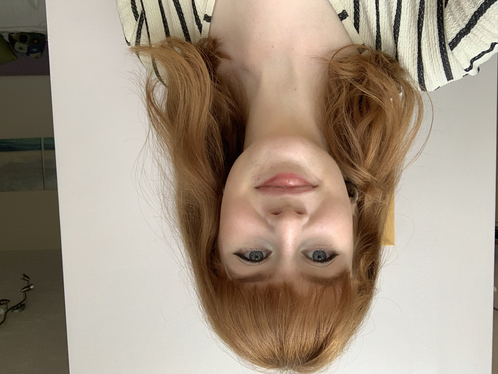

Beth's Personal Page

- I have 2 years experience in working as a freelance website assitant for the company ROOTS FOR CHURCHES, transferring their magazine materials to an online format.
- I have plenty of experience of working under pressure and working as a team to fill briefs through my experience of working abroad in Hungary.
- My portfolio